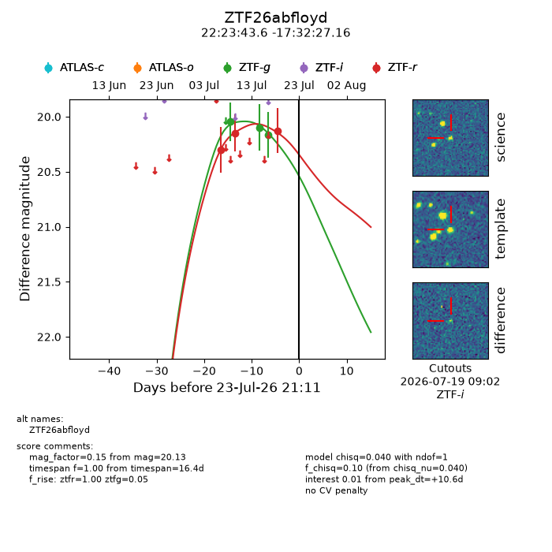
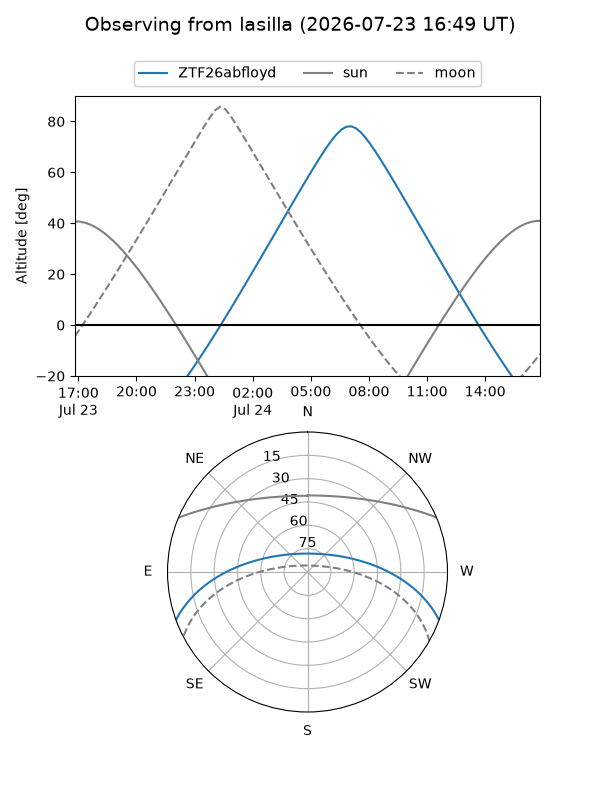
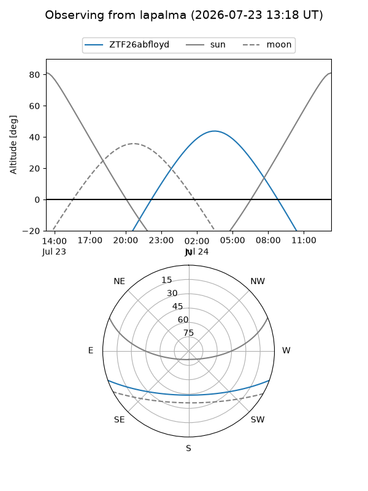
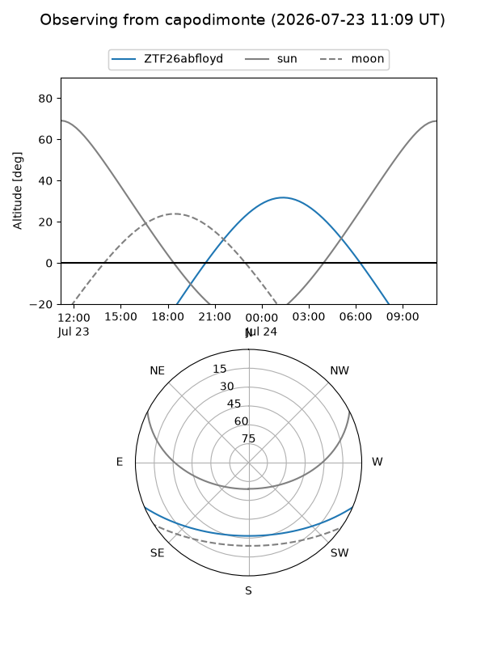
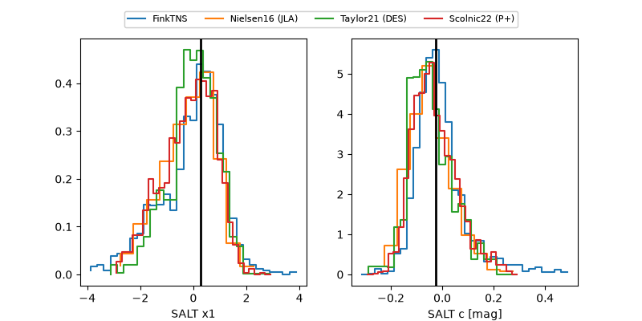

ZTF26abfloyd
Target ZTF26abfloyd at 2026-07-23 21:14
Aliases and brokers:
FINK-ZTF: ztf.fink-portal.org/ZTF26abfloyd
Lasair-ZTF: lasair-ztf.lsst.ac.uk/objects/ZTF26abfloyd
ALeRCE-ZTF: alerce.online/object/ZTF26abfloyd
Direct TNS query: direct search
alt names
ZTF26abfloyd (ztf,fink_ztf)
Coordinates:
equatorial (ra, dec) = 335.9319,-17.54088
equatorial (HMS+DMS) = 22:23:43.64,-17:32:27.16
galactic (l, b) = (40.8162,-54.66637)
Flags:
peak dt: +10.6
Photometry:
last ztfg=20.17, ztfr=20.13
3 ztfg, 3 ztfr detections
Lightcurve

Visibility



Additional plots
